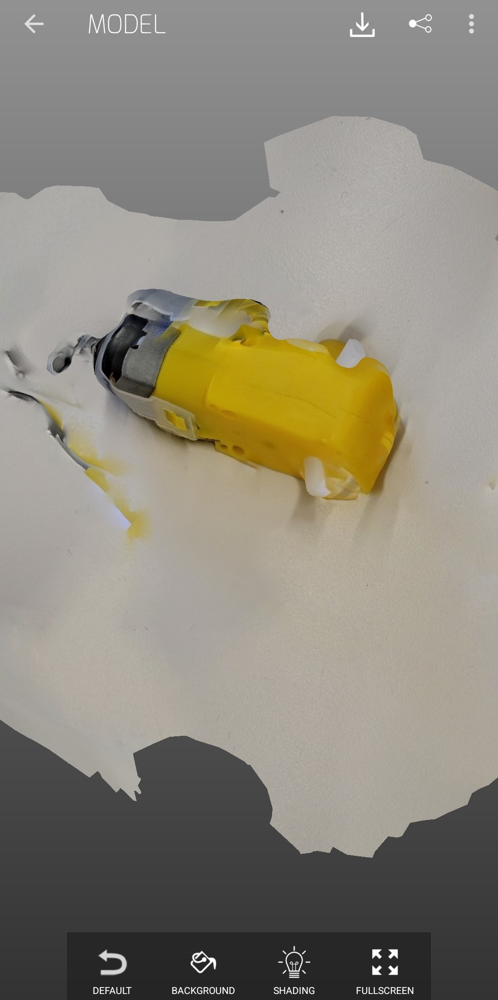
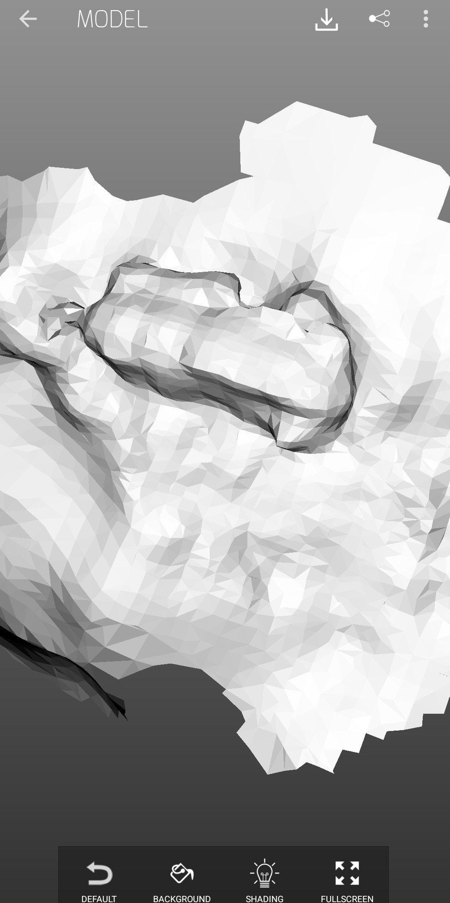
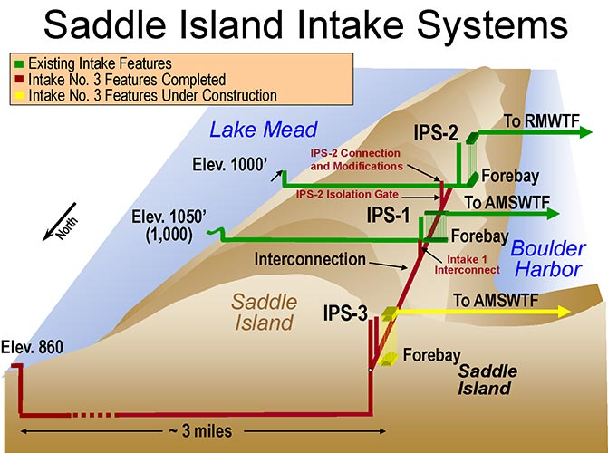
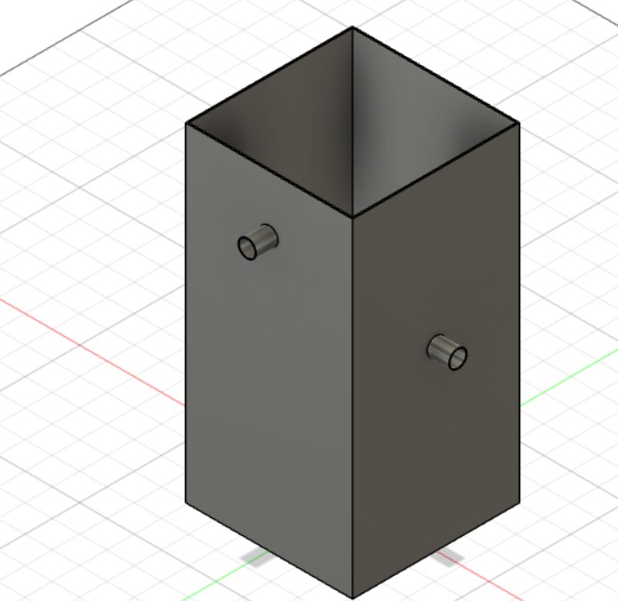
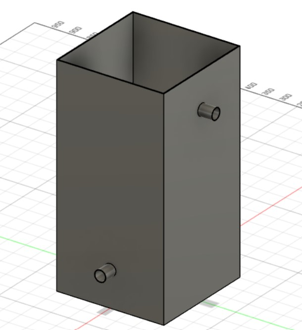

<div class="container-fluid">
### Week 5: 3D Printing
While pondering this week's assignment to create, I realized that I missed Ghungroo, Harvard's dance troupe show celebrating South Asian culture.
To make up for it, I decided to create a 3D representation of a mandala, a good-luck symbol in Indian culture.

To create this, I used splines to design a mandala drawing in Fusion360, then extruded each set of features to varying heights to create a "mandala tower."

I then exported this Fusion360 object to .stl format, and sliced it in the Prusa slicer. Next, I loaded it into the 3D printer, and printed it.

<a download href='./mandala v8.f3d'>Download my F3D file </a>
<a download href='./mandala v8.stl'>Download my STL file </a>
<a download href='./mandalagc.gcode'>Download my GCode file </a>
3D printing technology offers both benefits and drawbacks. Creating shapes such as this mandala would be difficult, if not impossible, using traditional subtractional methods of making. However, 3D printing is time-consuming. This relatively small object (5 centimeters in diameter) took an hour and a half to print. In addition, 3D printed objects can be brittle and are affected by shear stress due to the arrangement of filaments.
In addition, this week, I used a photogrammetry application called SCANN3D to scan a yellow hobby motor.
To make this scan, I walked around the motor, taking photos of it at certain intervals, which the application stitched together into a 3D scan.

This application also allowed me to see the polygons that the scan was composed of:

Finally, this week, I began work on a 3D model of a component of my final project. My project involves creating a more efficient irrigation system that minimizes water loss. To this end, I drew inspiration from the Lake Mead piping system, that supplies water from Lake Mead to millions of people in the water-scarce American Southwest.

This system involves multitier pipes at many different elevations. This helps water conservation authorities prioritize water use: pipes at higher levels lead to less essential applications, so as the water level falls and the pipes become inoperable, the less important water uses are the first to go, thereby reducing non-essential water wastage in times of crisis.
I decided to adopt this design for my own reservoir. In Fusion360, I created a water tank with inner dimensions of 300 mm x 300 mm x 600 mm, and created three valves; one is at a higher elevation, one at a middle elevation, and one at a lower elevation. As I work on my irrigation system, I can use this as a rudimentary watering priority system: plants that require less water, like succulents, can draw from the top valve, since they can better survive as the water level decreases. More water-intensive plants can draw from the middle and lower valves.

